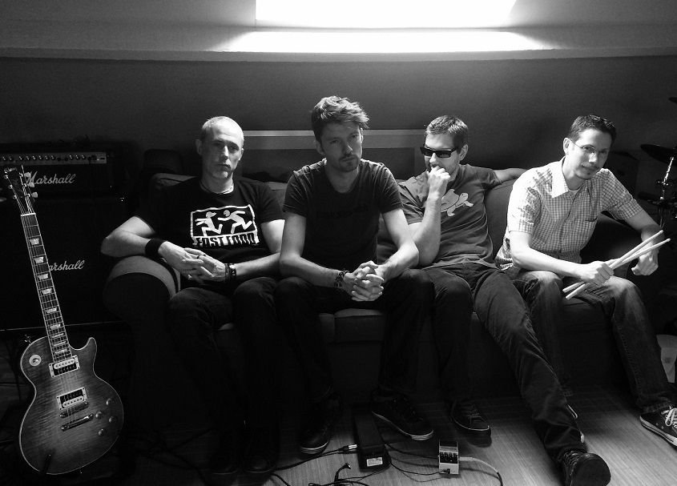

Jigs@w is a Belgian alternative rock band, formed in Brussels in 1996 by guitarist-singer Laurent and guitarist Gautier. The band was soon joined by drummer Olivier and bassist Nicolai, who was replaced in 1997 by Serge. Jigs@w has so far released 2 studio albums. The band reformed in 2013 after a long break. They are currently working on their new album which is due for 2015. Jigs@w is inspired by a variety of other genres, adopting various elements from them, using shifts in song dynamics, going from quiet to loud. Jigs@w's influences range from the 80 s to modern rock, from gypsy jazz to metal.

Bass guitar: Tim T. Guitar & backing vocals: Gautier Drums: Olivier Guitar & vocals: Laurent